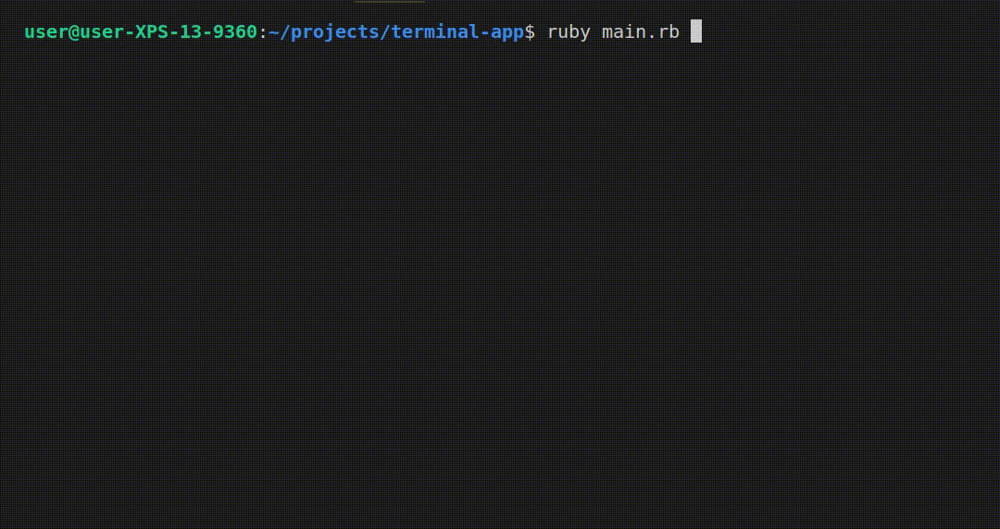

The Geo Quiz App
The Geo Quiz App was the first piece of assessment at Coder Academy, a terminal app written in Ruby. It serves as a game that provides the user with geography-related questions. It was designed with a scoring function and hard coded questions. The app was completed within the span of several days by my assessment partner and myself.